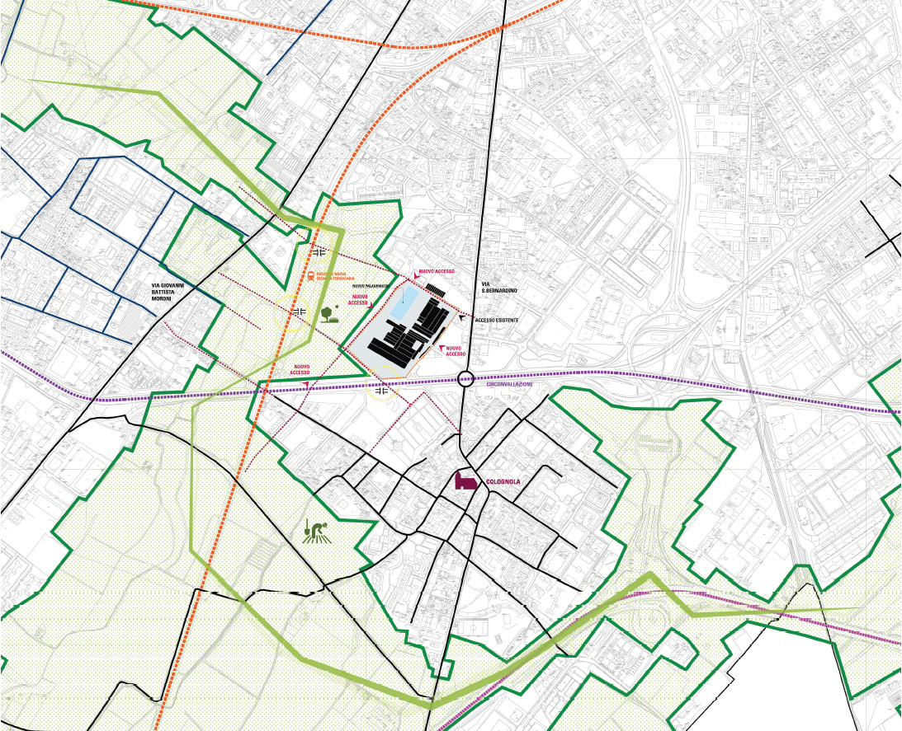
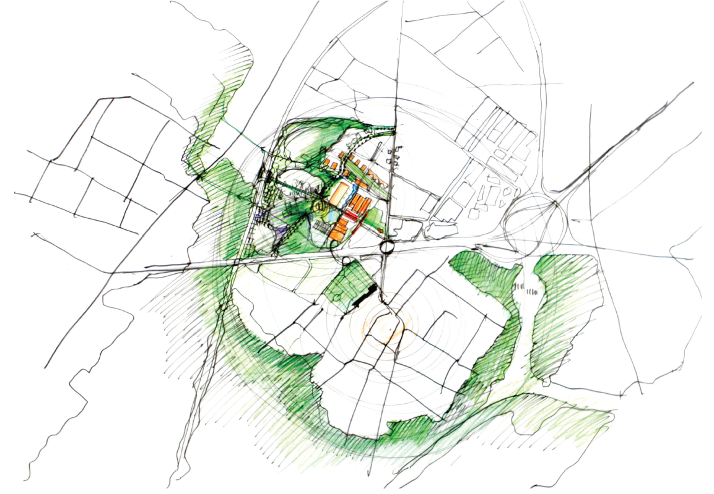

| STRATEGIE DI INTERVENTO |
 |
La prima criticità da risolvere per quanto riguarda l'area ex Gres è la sua chiusura quasi totale costituita da vere e proprie mura di recinzione che lo isolano dal tessuto circostante. La seconda criticità risulta essere il pronunciato dislivello tra alcune zone dell'area posizionate sopra una piattaforma di cemento e le aree verdi circostanti che impedisce un'agevole collegamento. Naturalmente la prima necessità è quella di aprire il lotto rendendolo permeabile sia ai tessuti urbani che al sistema del verde. Nuove porte, sia pedonali che carrabili, lo connetteranno alle vie di comunicazione esistenti e di progetto rendendo l'area "aperta" e multiconnessa. Fondamentale risulterà la strategia di intervento sul lato occidentale del lotto dove si trova una zona verde attualmente abbandonata che offre grandissime potenzialità nell'ottica della green infrastructure di cui si è parlato in precedenza. Sebbene in quest'area sia consentita la costruzione di nuovi edifici residenziali, al momento non si ipotizzano interventi edificatori a breve termine, di conseguenza si auspica un lavoro di trasformazione paesaggistica creando una parco con interventi molto leggeri che si potranno raccordare nella realizzazione del "Parco Ovest", come previsto dal progetto urbanistico già approvato. Riteniamo altresì molto importante ricostituire in quest'area gli orti urbani recuperando la sua funzione storica. Il nuovo parco può diventare così il fulcro del nuovo intervento, soprattutto se verrà realizzata una fermata del sistema ferroviario locale. Una serie di leggere passerelle pedonali connettono la piattaforma con la zona verde creando un sistema continuo tra l'area dell'ex Gres e il verde diffuso circostante, risolvendo al tempo stesso il problema dell'attraversamento della viabilità carrabile prevista al limite occidentale dell'area ex Gres. La riconnessione ai tessuti urbani diventa il secondo tema da affrontare per ottenere una rigenerazione urbana che non coinvolga solamente l'area di progetto, ma al contrario interessi le differenti polarità e diventi il collante della nuova periferia policentrica. I tessuti storici dei Corpi Santi diventano i generatori dei nuovi collegamenti che attraverso la green infrastucture si connettono ai tessuti della città consolidata. Fondamentale risulterà l'attraversamento delle attuali barriere che al momento risultano essere delle vere e proprie fratture: la circonvallazione e il tracciato ferroviario. Ponti ciclo-pedonali potranno riconnettere l'area ex Gres con il Corpo Santo di Colognola e dei sottopassi potranno attraversare la ferrovia per connettersi con il quartiere di Villaggio degli sposi. La realizzazione del nuovo accesso dalla circonvallazione renderà l'accessibilità del sito estremamente migliorata andando a liberare flussi di traffico da via S. Bernardino, che risulta essere già molto trafficata. |
 |